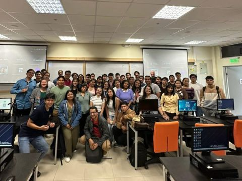
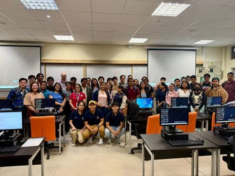
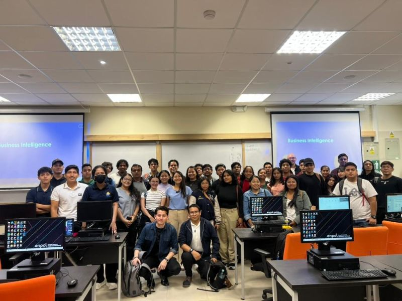
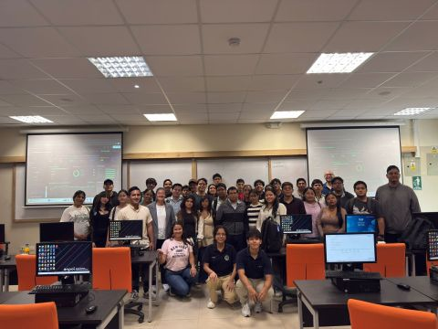

Excel for Analytics
Limpieza, modelado y estructuración inicial de datos tabulares.
Ver másExplora el conjunto de tecnologías, lenguajes y metodologías integradas en el plan de formación especializada:
Limpieza, modelado y estructuración inicial de datos tabulares.
Ver más
Gestión, consulta y extracción eficiente de bases de datos relacionales.
Ver más
Procesamiento automatizado y análisis estadístico avanzado.
Ver másDesarrollo de tableros interactivos y reportes ejecutivos.
Ver más
Transformación de datos complejos en estrategias de negocio.
Ver más
Inteligencia artificial aplicada al análisis y optimización de flujos.
Ver másDesarrollo profesional, marca personal y preparación para entrevistas.
Ver más